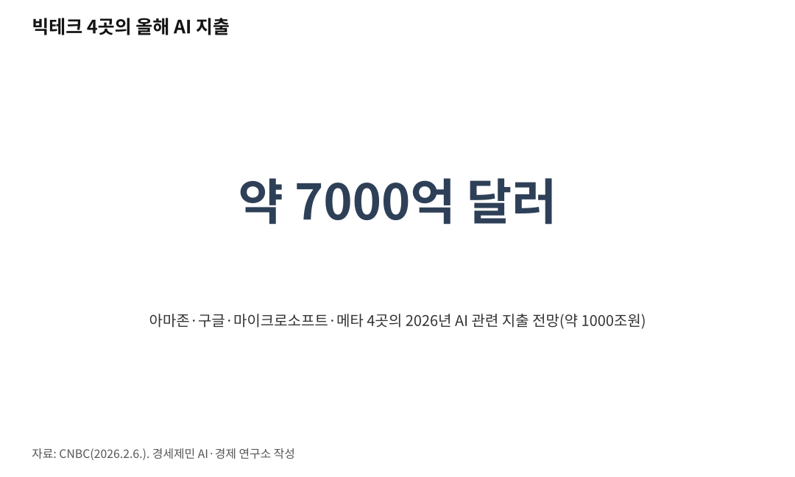

[주간 AI 동향] AI 투자, 반도체와 데이터센터로 몰린다
빅테크 설비투자 사상 최대…돈은 칩과 데이터센터로
진짜 병목은 메모리…29일 SK하이닉스 성적표 주목
인공지능(AI) 산업의 무게중심이 옮겨가고 있다. 지난 2년은 누가 더 똑똑한 AI를 만드느냐의 싸움이었다. 2026년 들어서는 그 AI를 돌릴 반도체와 데이터센터에 돈이 몰린다. 그 병목의 한복판에 한국 메모리가 있다.

칩을 만드는 회사도, 그 칩을 사는 회사도, 이를 지켜보는 투자자도 같은 곳을 본다. 올해 AI 산업의 승부처는 반도체와 데이터센터다. 국민에게는 일자리와 물가가, 투자자에게는 기업 실적이 걸린 이야기다.
1. 돈이 데이터센터로 간다
미국 빅테크의 올해 투자가 사상 최대로 불어난다. 미국 CNBC는 2026년 2월, 아마존·구글·마이크로소프트·메타 네 곳의 올해 AI 관련 지출이 7000억 달러(약 1000조 원)에 육박한다고 전망했다. 지난해보다 크게 늘어난 규모다. 네 회사는 몇 년째 투자를 키워 왔고, 올해는 그 폭을 더 늘렸다.
이 돈은 대부분 데이터센터를 짓고, 반도체를 사고, 통신장비를 까는 데 들어간다. AI 경쟁이 소프트웨어에서 '땅·전기·쇠붙이' 싸움으로 넘어갔다는 뜻이다. 투자가 워낙 커서 회사가 쥔 현금은 빠르게 줄고, CNBC는 이번 지출로 빅테크의 곳간이 크게 헐리고 있다고 전했다.
데이터센터는 전기를 많이 먹는다. 건물을 세울 땅과 이를 돌릴 전기, 열을 식힐 물까지 새 과제로 떠올랐다. 돈이 있어도 전력이 없으면 짓지 못한다. 그래서 회사들은 내년 투자 계획까지 앞당겨 내놓으며 설비를 먼저 깔아 두려 경쟁한다.
왜 이렇게까지 쏟아붓나. 회사들은 AI 수요가 앞으로도 계속 늘어난다는 쪽에 건다. 일부에서는 지나친 투자를 걱정하지만, 빅테크는 남보다 늦게 짓는 쪽이 더 위험하다고 본다.

2. 엔비디아 칩 여전히 귀하다
AI 계산을 도맡는 부품은 그래픽처리장치(GPU)다. 원래 게임 화면을 그리던 칩인데, 많은 계산을 한꺼번에 처리해 AI 학습에 쓰인다. 이 시장은 미국 엔비디아가 사실상 독점한다.
새 데이터센터를 지으려면 이 회사 칩부터 확보해야 한다. 경쟁사로 미국 AMD가 뒤를 쫓지만 격차는 여전히 크다. 각국 정부와 기업은 엔비디아 칩을 먼저 잡으려 줄을 서고, 주문하고도 오래 기다린다.
칩값은 비싸지고, AI 투자가 늘수록 이 칩 부족은 더 심해진다. AI 칩은 이제 안보 문제이기도 하다. 미국은 첨단 칩이 중국으로 넘어가지 못하게 수출을 막아 왔고, 칩 한 종류가 나라 사이 힘겨루기의 무기가 됐다.
3. 병목이 된 HBM 메모리
칩만으로는 부족하다. 진짜 병목은 메모리다. 고대역폭메모리(HBM)는 여러 메모리 칩을 위로 겹겹이 쌓아 데이터를 아주 빠르게 나르는 특수 메모리다. 엔비디아 칩 한 장에는 이 HBM이 여러 개 붙는다.
이 HBM을 제대로 만드는 곳은 한국의 SK하이닉스와 삼성전자, 미국 마이크론 정도다. 세 회사가 세계 물량을 사실상 나눠 갖는다. 그 가운데 SK하이닉스는 엔비디아에 HBM을 주로 대는 회사로 꼽힌다.
물량이 달리자 값이 오르고, 일반 메모리 값까지 함께 뛴다. 빅테크들도 메모리 값 상승을 투자비가 불어난 이유로 꼽는다. 그래서 메모리 회사들은 더 빠른 차세대 HBM 개발에 사활을 걸고, 누가 먼저 좋은 제품을 엔비디아에 넣느냐가 앞으로 몇 년 순위를 가른다.
4. 29일 한국 메모리 성적표
그래서 시선이 한국으로 쏠린다. SK하이닉스는 오는 7월 29일 오전 2분기 실적을 발표한다. 국내 여러 매체는 AI 메모리 호황에 힘입어 사상 최대 실적이 나올 것으로 전망한다.
앞서 이 회사는 지난 4월, 1분기에 사상 최대 분기 이익을 냈다고 밝혔다. 삼성전자도 같은 흐름을 탄다. 반도체는 한국의 가장 큰 수출 품목이어서, 두 회사 실적은 곧 한국 경제의 성적표다.
미국 빅테크가 쏟아붓는 AI 투자가 돌고 돌아 한국 기업 실적으로 이어지고, 증시와 일자리에도 그 온기가 번진다. 29일 발표에서 볼 대목은 HBM이 전체 매출에서 차지하는 몫과 하반기 공급 계획이다.
다만 우려도 있다. 메모리는 호황과 불황을 반복해 온 산업이다. 2023년에는 값이 무너져 SK하이닉스와 삼성전자가 반도체에서 대규모 적자를 냈다.
지금은 세 회사가 한꺼번에 HBM 생산을 늘린다. 수요가 기대에 못 미치거나 빅테크 투자가 속도를 늦추면 값이 다시 꺾일 수 있다. 물론 HBM은 장기계약 비중이 높아 범용 메모리보다 충격을 덜 받는다는 견해도 있다.
이 호황은 한국에 기회이자 시험이다. 메모리 두 회사가 나라 수출과 세금을 크게 떠받치는 만큼, 실적이 흔들리면 경제 전체가 함께 출렁인다. 그래서 시장은 29일 성적표를 숨죽여 지켜본다.
5. 모델 경쟁, 가격·속도로
반도체만 뜨거운 것은 아니다. 모델 경쟁도 계속된다. 2026년 들어 오픈AI, 구글, 앤스로픽, 메타가 새 모델을 잇달아 내놨다.
달라진 점이 있다. 이제는 '가장 똑똑한 모델' 하나로 이기지 못한다. 값이 싸고, 빠르고, 쓰기 편한지가 함께 저울에 오른다. 기업들은 어려운 일에는 힘센 모델을, 간단한 일에는 싼 모델을 붙여 골라 쓴다.
요즘 화두는 'AI 에이전트'다. 사람이 한 번 시키면 스스로 여러 단계를 처리하는 프로그램이다. 이런 쓰임이 늘수록 뒤에서 도는 계산도 함께 불어난다.
AI 값이 내리고 종류가 늘면 더 많은 기업과 개인이 실제 업무에 AI를 쓴다. 쓰는 사람이 늘수록 계산할 일도 늘고, 결국 다시 반도체와 데이터센터로 돌아온다. AI 투자가 칩과 건물로 몰리는 까닭이 여기에 있다.
참고문헌
· 「Tech AI spending approaches $700 billion in 2026, cash taking big hit」, CNBC, 2026.2.6., https://www.cnbc.com/2026/02/06/google-microsoft-meta-amazon-ai-cash.html
· 「SK Hynix posts record first-quarter profit, in line with estimates as memory prices climb」, CNBC, 2026.4.23., https://www.cnbc.com/2026/04/23/sk-hynix-earnings-ai-memory-shortage-hbm-demand.html
· 「삼성전자 7일·SK하닉 29일…기업들 '2Q 성적표' 어닝시즌 막오른다」, 뉴스1, 2026.7., https://www.news1.kr/industry/general-industry/6217708
· 「SK hynix Announces 1Q26 Financial Results」, SK hynix, PR Newswire, 2026.4.23., https://www.prnewswire.com/news-releases/sk-hynix-announces-1q26-financial-results-302750959.html
※ 이 글은 AI 프로그램 클로드를 활용해 작성했습니다.
#주간AI동향 #AI반도체 #데이터센터 #빅테크설비투자 #엔비디아 #GPU #HBM #SK하이닉스 #삼성전자 #AI투자 #인공지능